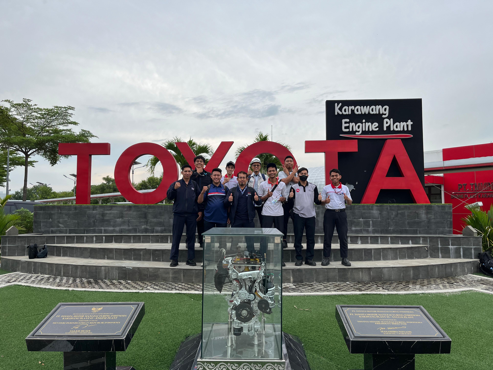
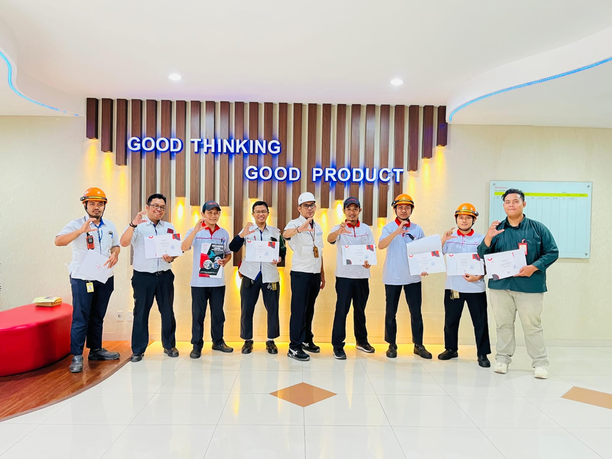
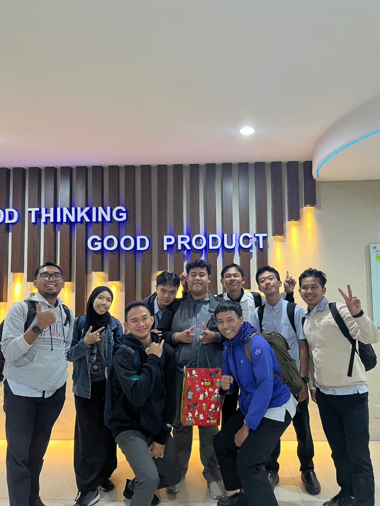
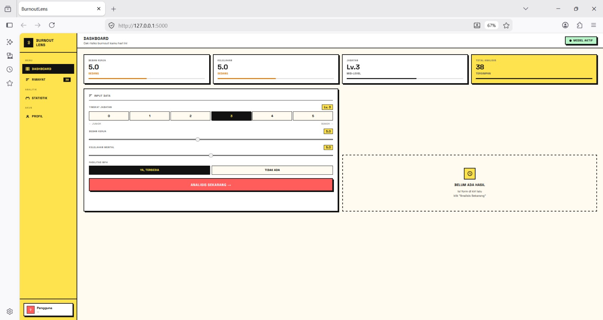
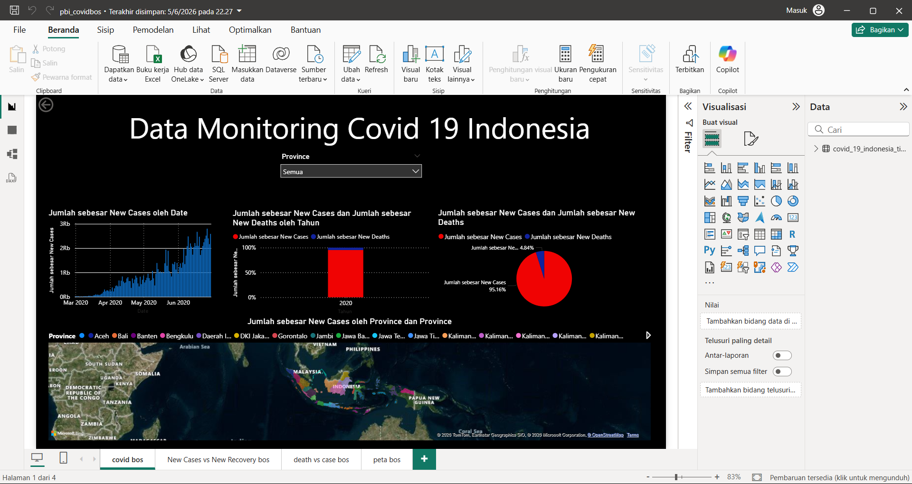
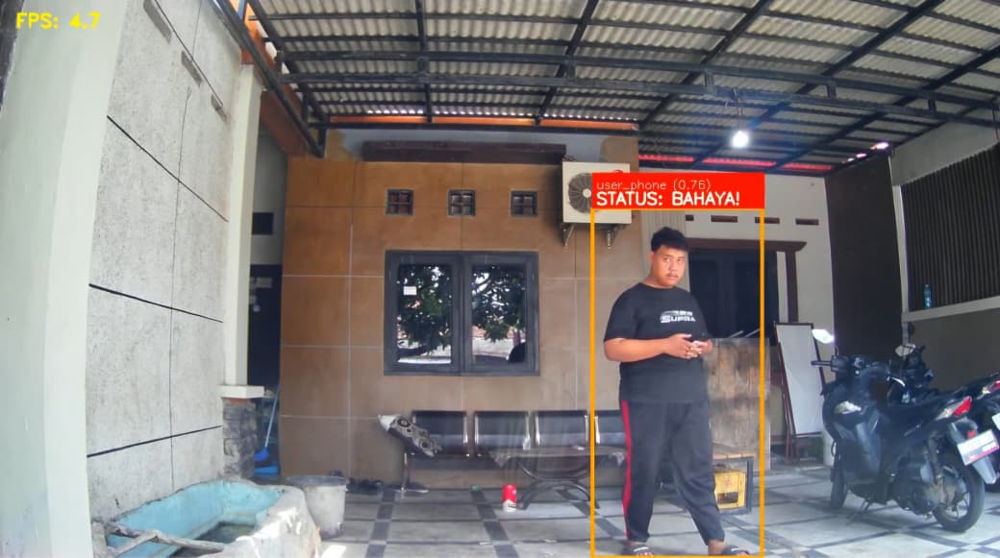
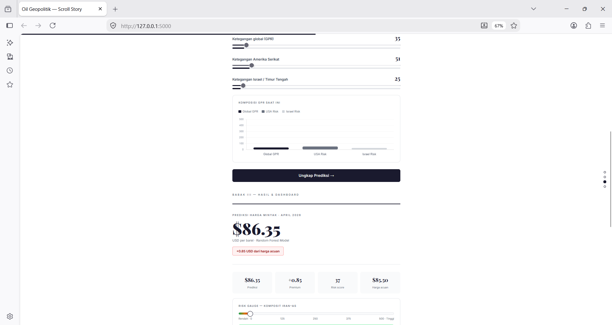
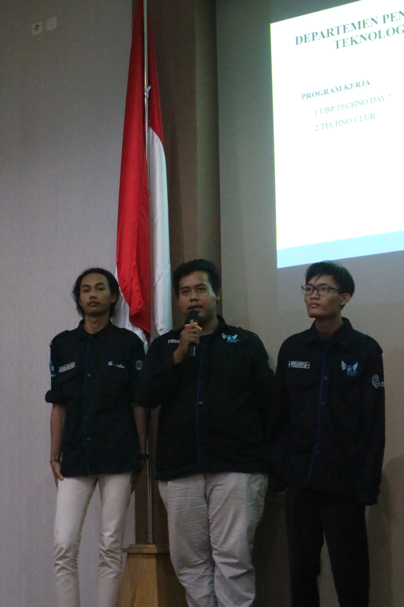

Profil Ringkas
Saya Farhan Fadhillah seorang lulusan Informatika dari Universitas Buana Perjuangan Karawang dengan fokus pada analisis data, pemodelan Machine Learning, dan Computer Vision. Portofolio web ini merangkum perjalanan akademik, keterlibatan aktif dalam komunitas belajar (Techno Club), pengalaman operasional & administrasi di PT Toyota Motor Manufacturing Indonesia, serta berbagai riset berbasis data yang telah saya selesaikan—seperti analisis beban kerja, visualisasi interaktif Power BI, hingga deteksi objek berbasis Deep Learning.
Riwayat Pendidikan
Universitas Buana Perjuangan Karawang
Informatika / Ilmu Komputer
SMK Nahdlatul Ulama Attarbiyyah
Teknik & Komputer / Kejuruan
Proyek & Pengalaman Kegiatan (8 item)
Berikut adalah daftar proyek, penelitian, dan pengalaman kerja yang pernah saya selesaikan.

PELATIHAN DAN PENGEMBANGAN DASHBOARD ANALISIS DATA DI PT TOYOTA MOTOR MANUFACTURING INDONESIA
Mengolah dan memvisualisasikan data operasional menjadi dashboard interaktif untuk membantu pengambilan keputusan berbasis data secara efisien.

PELATIHAN CARBON NEUTRAL Di PT TOYOTA MOTOR MANUFACTURING INDONESIA
Pemahaman mengenai konsep netralitas karbon, pengurangan emisi gas rumah kaca, serta penerapan prinsip keberlanjutan lingkungan pada operasional industri modern.

PROGRAM ADMINISTRATOR DI PT TOYOTA MOTOR MANUFACTURING INDONESIA
Mengelola administrasi pencatatan training carbon neutral di Toyota Learning Center, dokumentasi alur kerja operasional, memastikan kelancaran alur Training Carbon Neutral, serta visualisasi data training menggunakan power bi.

PREDIKSI KELELAHAN KERJA/BURNOUT MENGGUNAKAN RANDOM FOREST
Prediksi Kelelahan Kerja Menggunakan Random Forest Berdasarkan Beban Kerja, Kelelahan, Jabatan

VISUALISASI ANGKA KEMATIAN COVID 19 MENGGUNAKAN POWER BI
Visualisasi Data Covid 19 berdasarkan kasus baru oleh tanggal, kasus baru dan kematian baru oleh tahun, serta pemetaan wilayah yang terkena covid 19

DETEKSI PENGGUNAAN HANDPHONE PADA PEJALAN KAKI MENGGUNAKAN FASTER R-CNN
Membangun Sistem Deteksi Penggunaan Handphone Pada Pejalan Kaki Menggunakan Faster R-CNN Guna Untuk Keselamatan Pejalan Kaki Supaya Tidak Terdistraksi Handphone Saat Berjalan

SIMULASI MACHINE LEARNING PREDIKSI HARGA MINYAK DAN GPR
Pemodelan Random Forest untuk memprediksi fluktuasi harga minyak dunia berdasarkan analisis Geopolitical Risk Index (GPR) dan simulasi ketegangan antar negara

ANGGOTA DEPARTMENT PENRISTEK (PENDIDIKAN RISET DAN TEKNOLOGI)
Wadah kolaborasi dan belajar bersama untuk berdiskusi, memecahkan masalah pemrograman, serta menyelesaikan tugas-tugas teknis yang rumit atau terkendala secara efektif
Mari Berkolaborasi!
Punya proyek menarik atau peluang kerja sama? Kontak saya langsung!
Kirim Email Sekarang